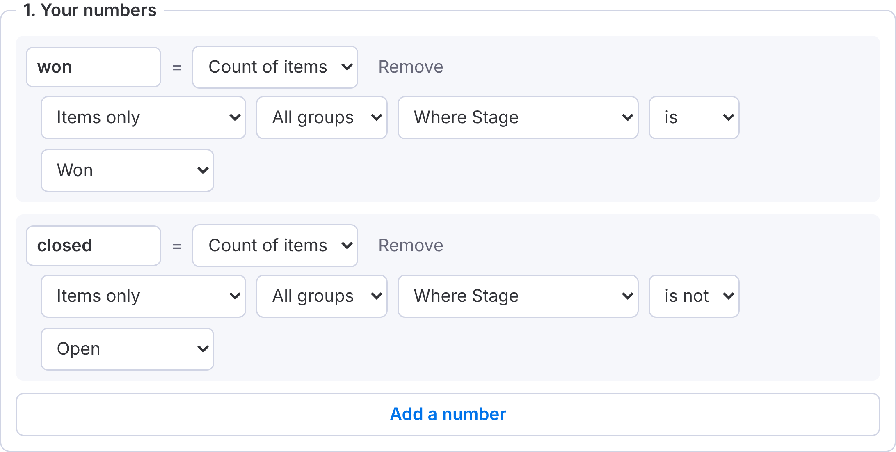
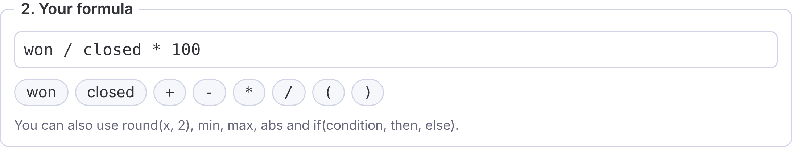
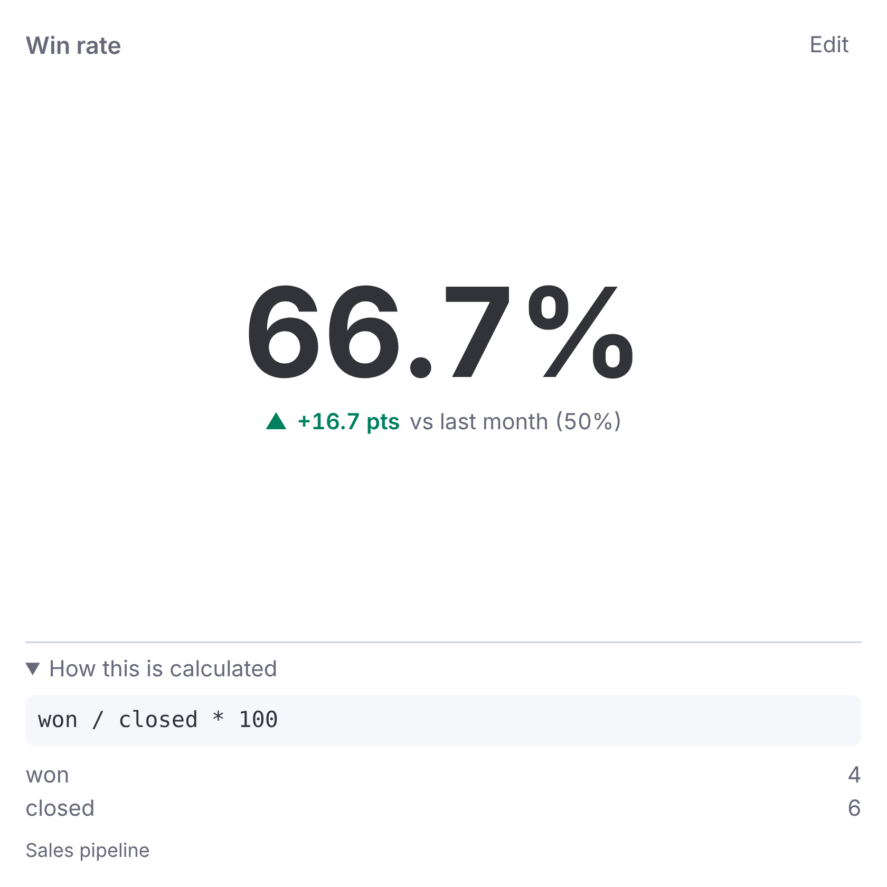

How to use Dashboard Math
Before you start
- You need a monday.com account with dashboards, and at least one board that holds numbers, statuses or dates.
- Members and admins can set up a widget. Viewers cannot load app data in monday.com.
Install
- Open the monday.com apps marketplace and search for "Dashboard Math".
- Choose Install and pick the workspaces that may use it.
Add your first calculation
- Open a dashboard and choose Add widget, then Apps, then Dashboard Math.
- Connect the board that holds your numbers.
- Choose Get started.
1. Name your numbers
Choose Add a number. Give it a short name, pick a calculation (sum, average, count, smallest, largest or median) and a column. Narrow it with a group or a filter such as "Where Status is Done". Choose items, subitems or both.

2. Type your formula
Use the names of your numbers with + - * / and brackets. For example won / closed * 100. You can also use round(x, 2), min, max, abs and if(condition, then, else).

3. Choose how it looks
Pick number, percent or currency and how many decimals. Turn on "Compare with the previous period" and pick a date column to see the change since last month, quarter or year.

Good to know
- A divide by zero or an empty column shows "n/a" and never a wrong number.
- The widget updates a few seconds after the board changes.
- Very large boards are read up to 10,000 items, and the widget says so when that limit is reached.